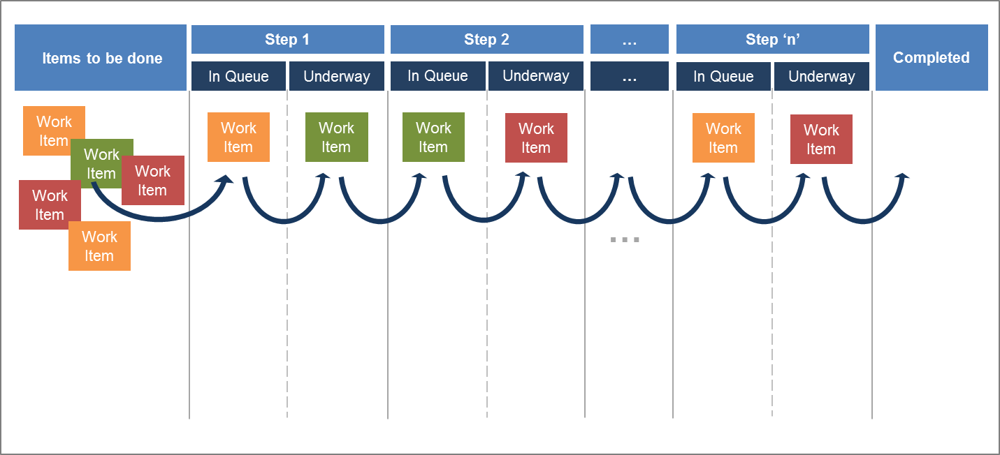

“The Kanban approach ensures work items are managed continuously across a number of states from definition to completion (the
time to cross such states is called the ‘lead time’ and is used a key measure for the approach); work-in-process is managed
such that the team are always utilised but are not split across too many activities. The aim of Kanban is to minimise resource-downtime
waiting for, or switching between, work items.”
Achieving the aims of Kanban involves organising the workflow as a series of steps with a work item being queued for each
step, then being worked upon until completion and then being entered into the queue for the next step. In this way items are
pulled (not pushed) through the process, can be expedited if needed and the Product Owner controls the input to the overall
process. Visualising this is achieved using a Kanban board (see figure: kanban board).
kanban board
An example Kanban Board
The use of a Kanban board allows bottle-necks to be quickly identified and the flow of work items to completion to be accurately
controlled and predicted. It also means that re-prioritisation by the Product Owner don’t disrupt the work-in-process.